A party table does more work than just the decorations scattered around it. It sets the mood the second guests walk in, guides how people actually move through the food, and quietly signals how much thought went into the whole event.
Getting it right doesn't require a massive table or an unlimited budget. It requires the right setup for the actual occasion, a casual backyard hang doesn't need the same table as a milestone dinner party, and forcing one approach onto every single event is usually where things go wrong.

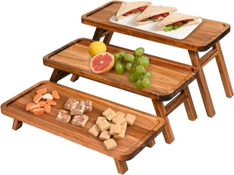
GEHE 3 Tier Acacia Wood Serving Tray Stand, Foldable Dessert Table Display
Shop on Amazon16 Ways to Set the Table
Last-Minute, Still Looks Planned
Life happens, and sometimes a table ends up decorated in genuine panic mode with very little lead time to work with.
One clean tablecloth, serving dishes grouped sensibly together, and a single centerpiece, that's the entire strategy, and it's meant to stop right there.
Overcorrecting is really what ruins a last-minute table. Keeping it simple is what saves it every single time.
Photo-Ready for Social Media Moments
People photograph food before eating it now, whether a host plans for that or not, so it's worth designing with that reality in mind from the start.
Natural lighting, a clean background, and real color contrast make the biggest difference in how a table actually photographs in the end.
Clearing clutter before guests arrive matters most here. If the table looks good from one clean angle, guests will reliably find it themselves anyway.
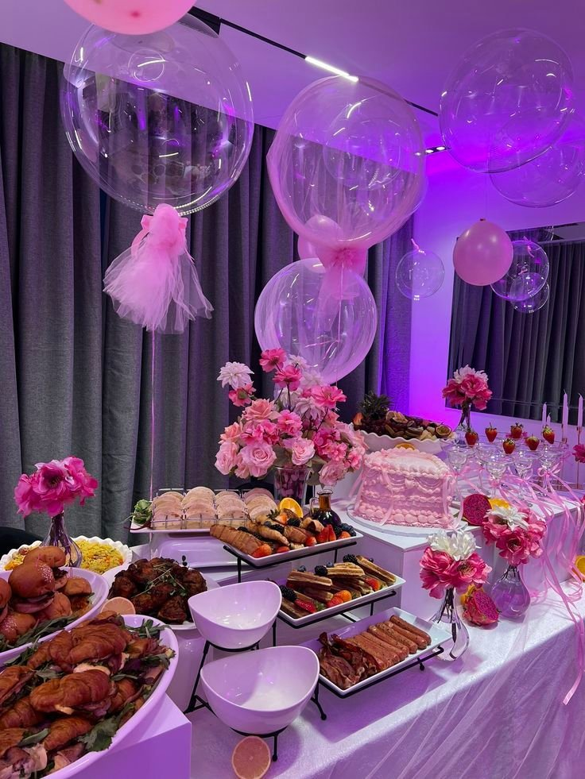
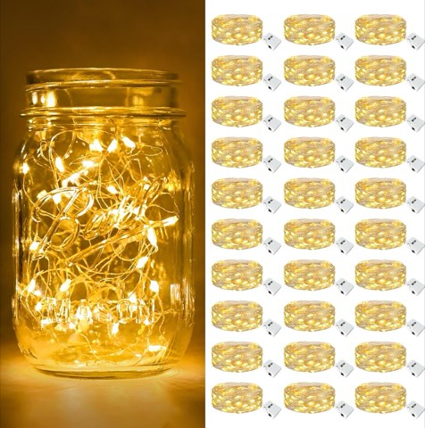
btfarm 30 Pack Battery Operated Fairy Lights, Twinkle Lights with 3 Modes
Shop on AmazonSmall Space, Maximum Impact
A small space genuinely challenges creativity, sure, but it doesn't actually have to limit the final result.
Vertical displays, a wall backdrop, and a narrower table all stretch a tight footprint considerably further than most people expect going in.
Avoiding wide platters that eat up precious space matters more here than almost anywhere else, smart layout consistently beats square footage.
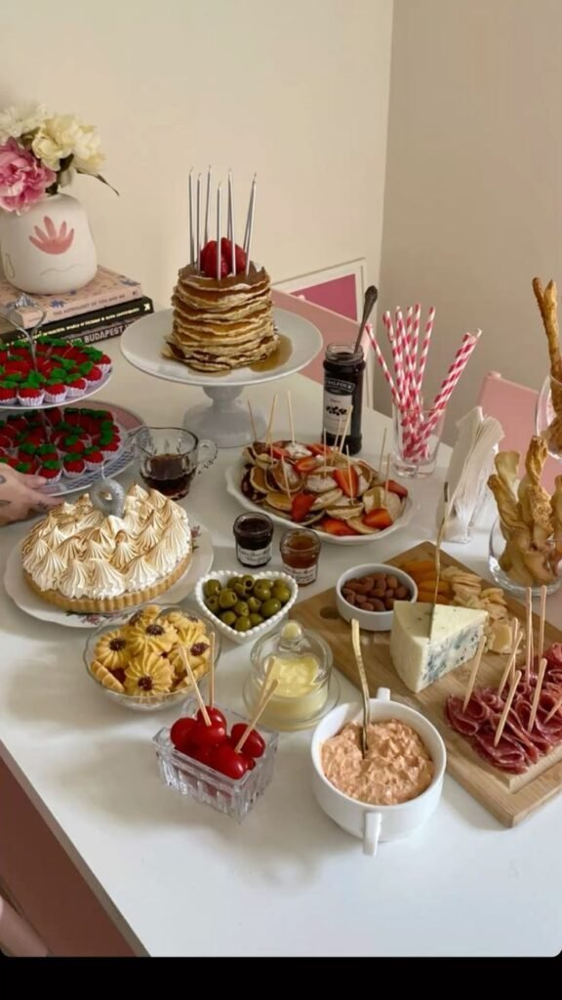
Brunch, Effortless by Design
A brunch table should feel light and genuinely inviting, a heavy, overly structured setup actually works against the whole relaxed mood of the meal.
Light linens, a fresh fruit display, and a few simple florals are enough to carry the table without ever competing with the actual food.
Letting the food's own colors shine matters here too, pancakes and fresh fruit deserve just as much visual attention as any centerpiece on the table.
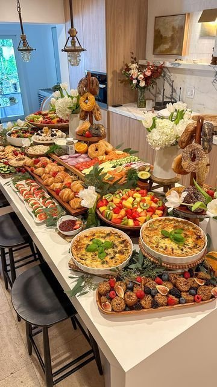
Sweet and Savory Combo
Mixing sweet and savory on a single table works especially well when space on that table is genuinely tight.
Visually dividing the table, sweet on one side, savory on the other, neutral items bridging the middle, keeps the combination feeling intentional rather than chaotic.
Guests appreciate having real options, and they tend to linger and snack longer as a result, which is really the entire point of a party table.
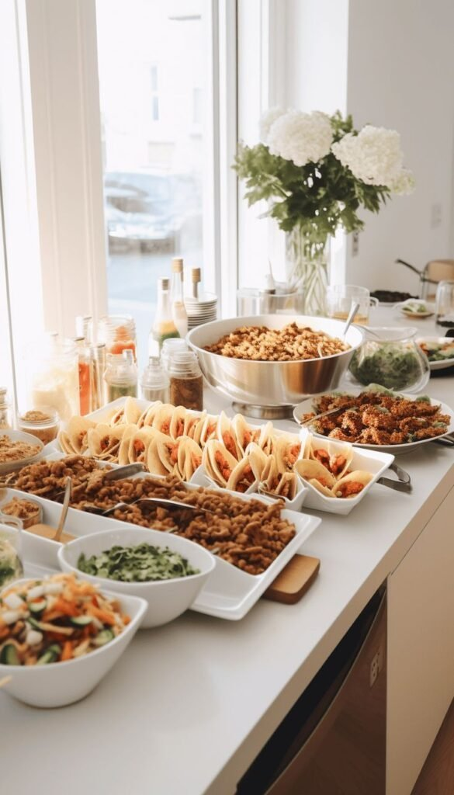
Budget-Friendly, Looks Expensive
Some of the most effective party table setups cost almost nothing at all to put together.
Reusing serving trays, neutral linens already on hand, and glass jars as simple decor stretches a tight budget considerably further than expected.
Spending real money on one standout item, rather than spreading it across ten small purchases, is what actually reads as intentional, no guest ever asks what the table cost, they just notice the effort.
Seasonal, Without Tipping Into Tacky
A seasonal table feels genuinely special when it stays subtle, rather than turning into a full holiday store display.
Seasonal colors, natural textures, and one real seasonal focal point, pumpkins in fall, greenery in winter, florals in spring, citrus in summer, carry the theme quietly without shouting it.
A table that hints at the season instead of announcing it tends to earn more appreciation than one piled with every available decoration in the house.
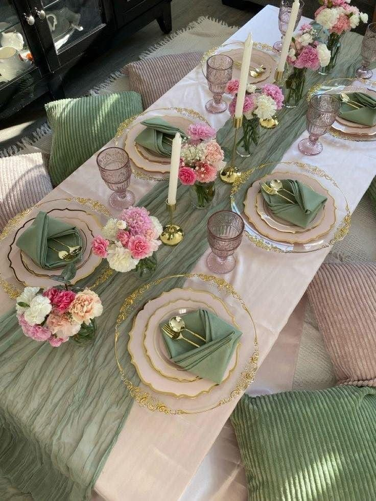
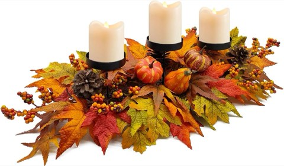
Fall Table Centerpiece, 27.5 Inch, Artificial Pumpkins, Berries and Maple Leaves
Shop on AmazonOutdoor Setup That Survives Real Life
Outdoor parties sound dreamy right up until wind, bugs, and uneven ground show up uninvited and change the plan entirely.
Weighted tablecloths or clips, low centerpieces that won't tip over, and covered food trays handle the practical side before it ever becomes a real problem.
Nature already provides plenty of ambiance on its own, the setup just needs to stay functional enough not to fight against it.
Kid-Friendly, Parent-Approved
A kids' table needs to balance fun and function, designed around actual survival rather than just appearances on the surface.
Cute disposable table covers, individually portioned snacks, and an activity placemat keep kids occupied while parents get a genuine break for once.
One hard-earned lesson worth passing along: never place drinks anywhere near the crafts. That particular mistake only needs to happen once.
Elegant Setup for Formal Occasions
A formal table needs real confidence, treated like an outfit, one genuine statement piece beats ten small accessories scattered around it.
Crisp linens, neutral serving ware, and a single bold centerpiece form the foundation, with candles doing a lot of the remaining mood-setting work.
This setup is built for anniversaries, milestone birthdays, and dinner parties, the kind of occasion where guests should feel noticeably special the moment they actually sit down.
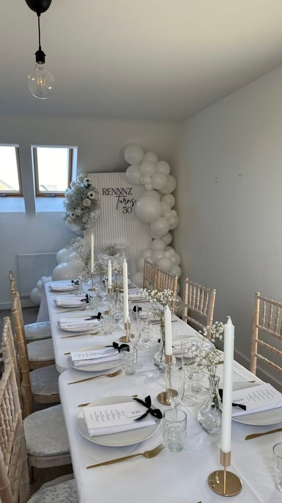
Themed, Without Going Overboard
Themes scare a lot of hosts, and honestly for good reason, nobody wants a table that looks like a costume aisle exploded across it.
One main theme color, one supporting texture, and a few subtle themed accents keep the concept readable without ever overwhelming the table.
Letting the food's natural colors do some of the thematic work beats piling on plastic decor every time, balance is what keeps a themed table from feeling loud.
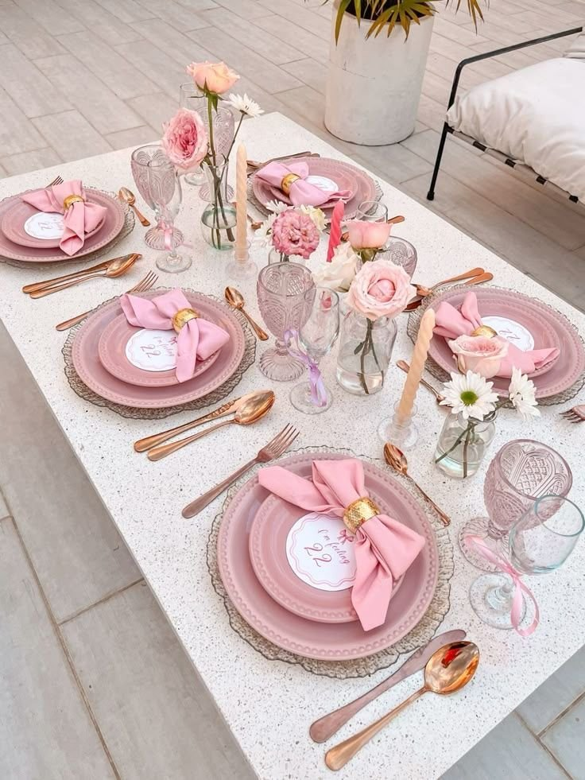
Casual Setup for Laid-Back Events
Not every gathering needs real structure behind it. A casual table reads as warm and welcoming precisely because it isn't overly composed.
Shared platters, paper or linen napkins, and low centerpieces that don't block reach keep everything genuinely accessible to whoever walks up.
Guests grab food without needing to ask first, which matters more for the overall mood than people tend to give it credit for, a strong fit for game nights and backyard parties alike.
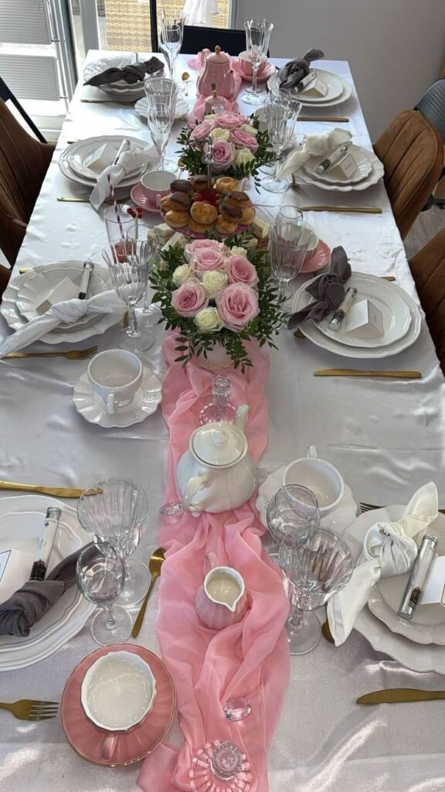
A Dessert Table That Steals the Spotlight
Dessert tables earn their own moment, they often get photographed more than the actual guest of honor standing nearby.
A statement backdrop, the cake as the visual anchor, and smaller desserts grouped in odd numbers, three or five per cluster, build real visual interest across the spread.
Mixing materials like glass, wood, and ceramic across the table makes the whole spread look genuinely styled instead of just stacked together.
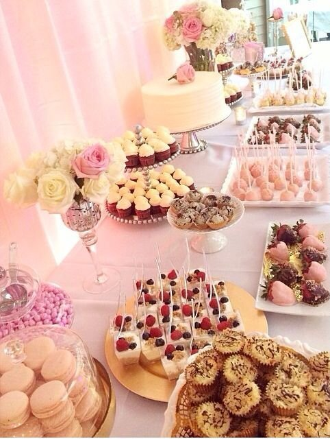
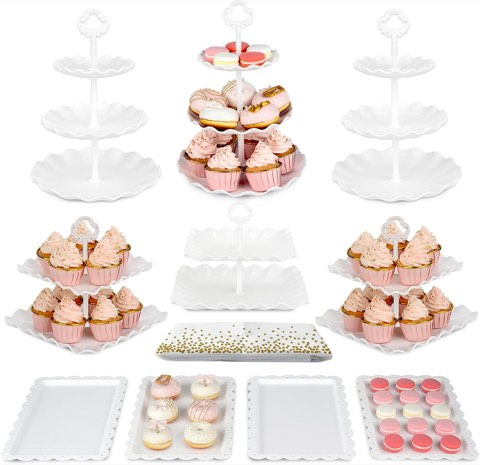
NWK 11-Piece Dessert Table Set, Cupcake Stands, Trays and Table Cloth, White
Shop on AmazonBuffet Style That Actually Flows
A buffet table causes real chaos when guests have to guess where to even start. Designing the flow on purpose solves that before it ever happens.
Plates and napkins first, then main dishes, sides, sauces, and toppings, with cutlery saved for the very end, keeps the line moving instead of creating awkward reaching.
Leaving genuine space at the end of the table matters too, guests need somewhere to land before carrying a full plate away from the spread.
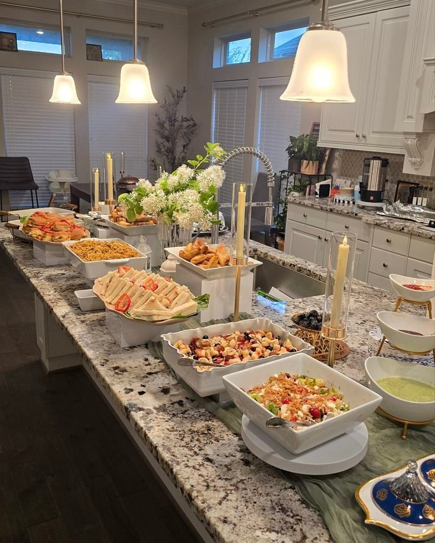
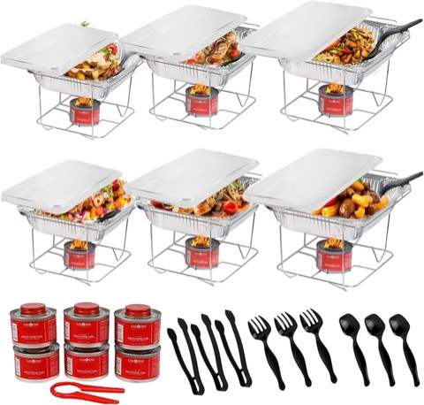
Alpha Living 6 Pack Disposable Chafing Dish Buffet Set with Half Size Pans
Shop on AmazonMinimal Setup for Small Gatherings
Not every party needs drama behind it. For a smaller gathering, less genuinely does more in almost every case.
One tight color palette, clean serving dishes, and real negative space are the whole formula, avoiding the urge to fill every inch is what makes the food itself stand out.
Guests tend to relax more around a minimal table, and cleanup stays noticeably easier afterward, which is its own kind of quiet reward.
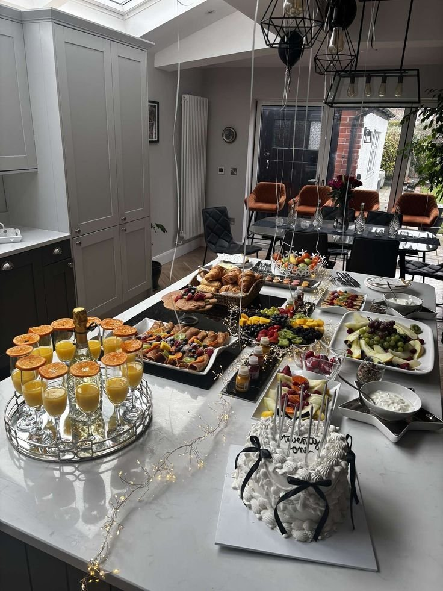
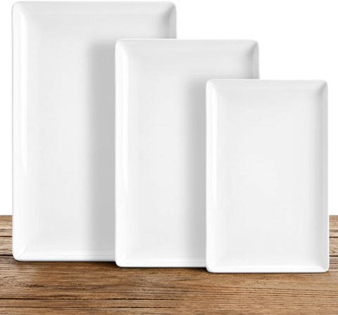
Kassel Ceramic Serving Platter Set, 16, 14 and 12 Inch, White Porcelain
Shop on Amazon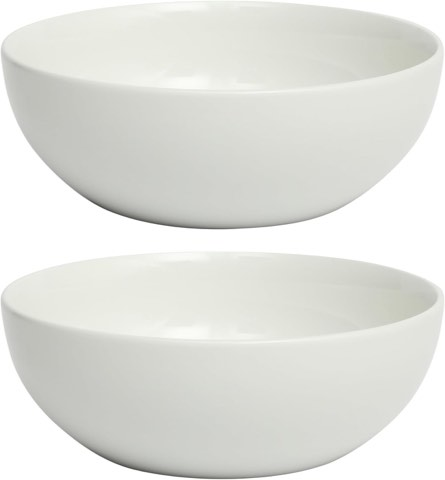
Gibson Home Extra Large White Porcelain Serving Bowls, Set of 2, 100 oz
Shop on AmazonThe Classic Layered Setup
This setup rarely fails, and it's really the move for a polished look without overthinking the whole table.
A neutral tablecloth, a runner layered on top for contrast, and trays or platters stacked over that build real depth with very little effort involved.
It adjusts easily for formal or casual events just by shifting colors and textures, which makes it a strong default for a birthday, an engagement party, or a holiday dinner.
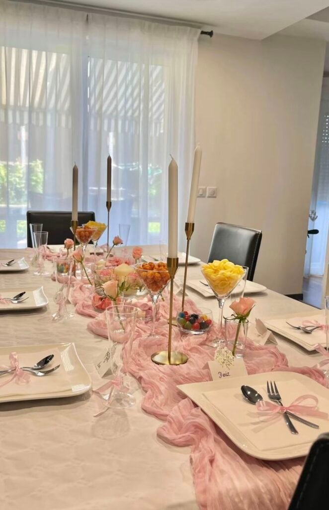
What a Party Table Actually Needs to Get Right
Size matters more than it seems at first glance, too small and the food feels cramped, too large and the table reads as empty no matter how much ends up placed on it.
Negative space deserves real respect too, a table filled to every edge reads as cluttered rather than abundant, while a little breathing room lets the actual food genuinely stand out.
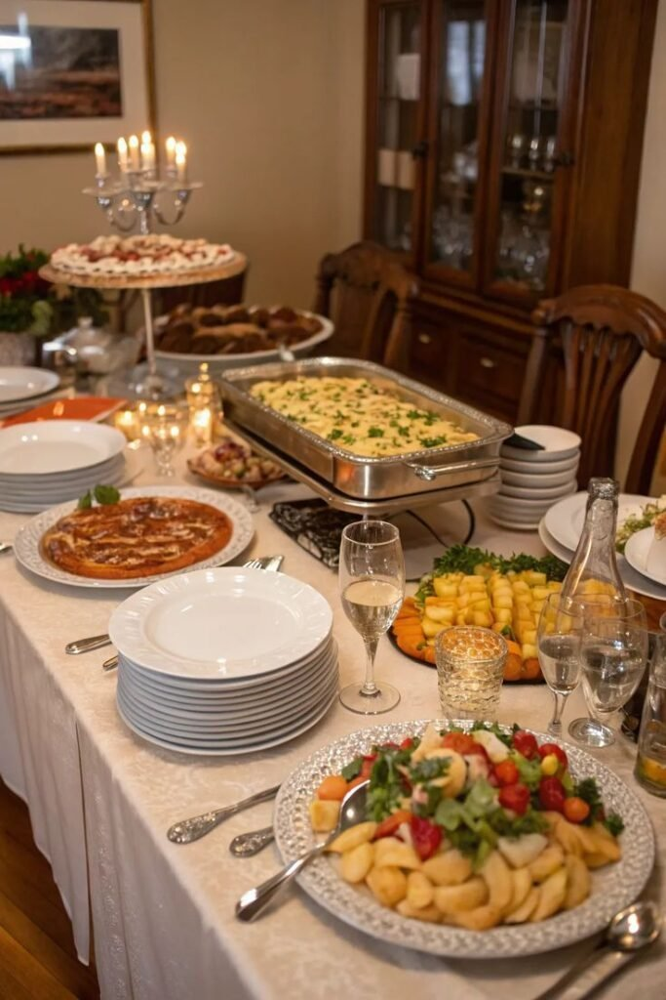

Final Thoughts
A party table isn't just a surface to put food on, it's doing real work, setting the tone for the whole event before a single guest even sits down to eat.
Pick the setup that actually matches the occasion, rather than reaching for whatever looks best online. The table that fits the moment will always read as more intentional than the one chasing a trend.